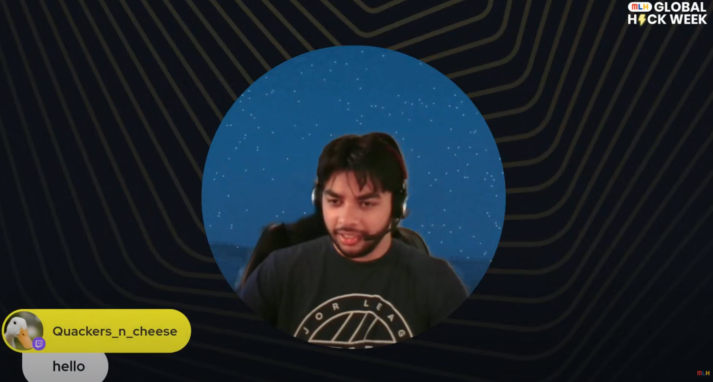

Modern History of AI through Research Papers
Abdullah from MLH put together an excellent little stream briefly covering the history of AI development through research papers.
Research Paper Trail
- Computing Machinery and Intelligence by A.M.Turing(1950), Mind 49: 433-460
- A Logical Calculus of the Ideas Immanent in Nervous Activity by Warren S. McCulloch and Walter Pitts(1943), Bulletin of Mathematical Biophysics, Vol. 5 pp. 115-133
- The Perceptron: A Probablistic Model for Information Storage and Organization in the Brain by F. RosenBlatt(1958), Psychological Review Vol. 65, No. 6
- Learning Representations by Back-propagating Errors by David E. Rumelhart, Geoffrey E. Hinton & Ronald J. Williams (1986)
- Deep Residual Learning for Image Recognition by Kaiming He, Xiangyu Zhang, Shaoqing Ren & Jian Sun of Microsoft Research (2015)
- Attention Is All You Need by Ashish Vaswani, Noam Shazeer, Niki Parmar, Jakob Uszkoreit, Llion Jones, Aidan N. Gomez, Lukasz Kaiser and Illia Polusukhin (2017)